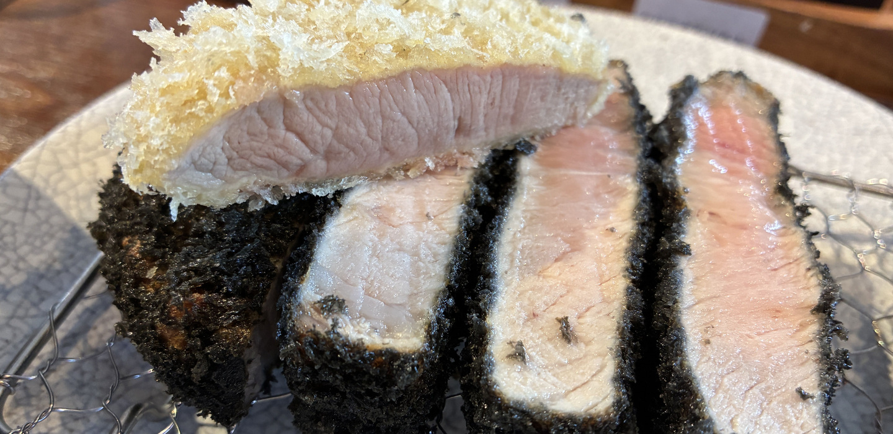
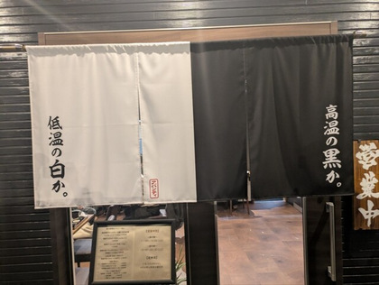
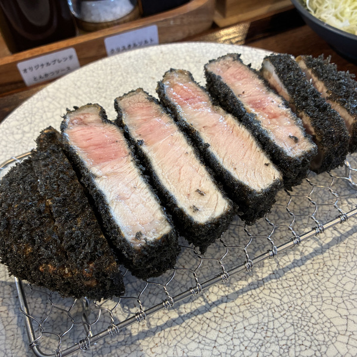
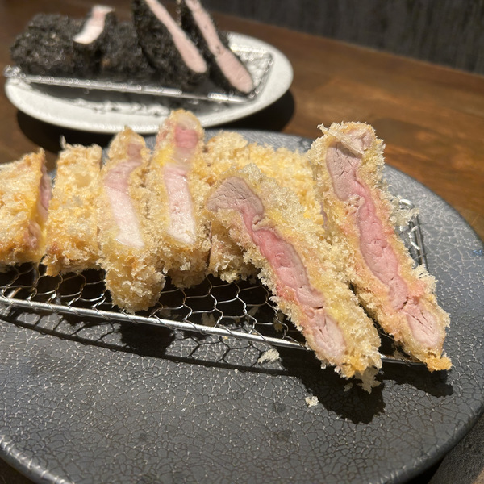
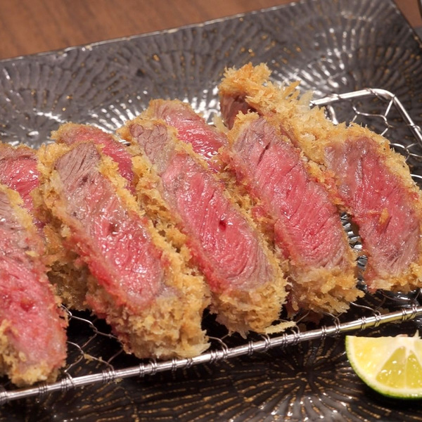

白と黒のこと

高温の黒か、
低温の白か。
使用するお肉は、どちらも同じ熟成豚。火入れと衣で、まったく違う一皿になります。贅沢とんかつは2024年1月16日に松阪駅西口に、竹炭熟成とんかつは2026年2月10日にフードパークこむぎむらに開店しました。
高温で、黒い衣
竹炭を練りこんだ特注の生パン粉を、高温でカリっと仕上げます。これぞとんかつという食感に仕上げました。


低温で、白い衣
糖度を抑えた特注の生パン粉を、低温で。驚くほど柔らかく、とろける食感に仕上げました。贅沢とんかつでは、太香と太白の胡麻油で、極低温と低温の二度揚げにしています。

松阪牛のカツレツ
贅沢とんかつの松阪牛はA5ランクのみ。店内で1週間前後、氷温熟成しています。竹炭熟成とんかつには、黒衣の松阪牛かつ膳もあります。